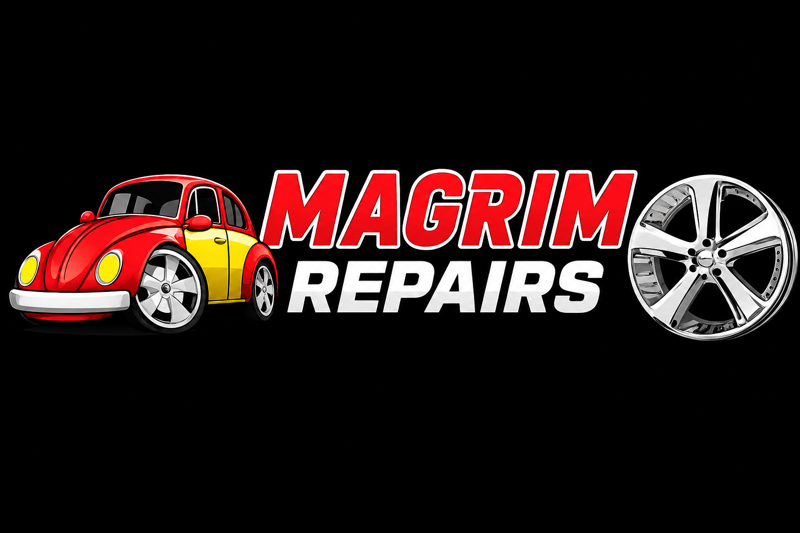
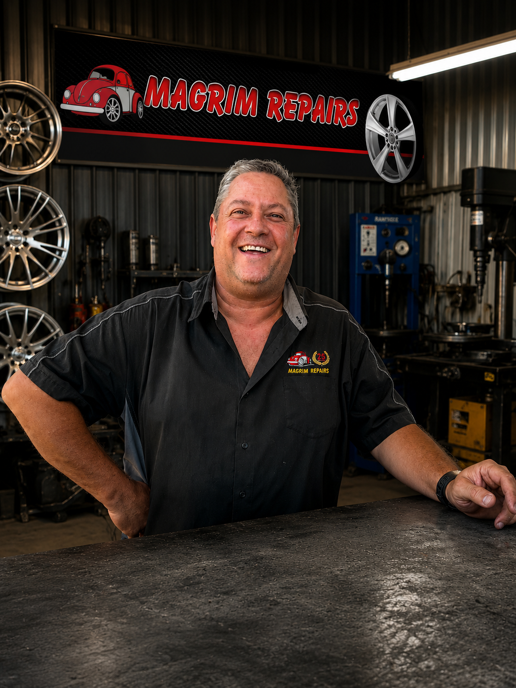

Wheel Straightening & Welding
Professional repairs for buckled, cracked or severely damaged rims, straightened and welded back to a safe, true condition.
Windhoek, Namibia · 25+ Years Experience
Magrim Repairs restores damaged, buckled and scuffed aluminium wheels for passenger cars, motorcycles and quad bikes — fast, professional workmanship you can trust.
Magrim Repairs is a well-established aluminium wheel specialist based in Windhoek, Namibia. We offer expert repairs, customization and refurbishing for all makes of aluminium wheels.
With over 25 years of experience, we have built a reputation for honest advice and professional workmanship. We service passenger cars, motorcycles and quad bikes — bringing damaged, buckled and scuffed wheels back to life.
Our customers trust us because we treat every wheel as if it were our own. For quotes and inquiries you can speak directly to Marius, who will guide you through the best repair option.

Our workshop is in Prosperita, just minutes from central Windhoek, at 225 Copper Street. Come by anytime for aluminium wheel repairs, refurbishing and customization — or send us photos on WhatsApp first for a quick quote.
225 Copper Street
Prosperita, Windhoek
Namibia
Monday – Friday, business hours.
Call ahead for weekend appointments.
Expert repairs, customization and refurbishing for all makes of aluminium wheels.
Professional repairs for buckled, cracked or severely damaged rims, straightened and welded back to a safe, true condition.
Restoring scuffed or curb-damaged aluminium wheels, plus custom paint finishes to give your wheels a fresh, personalised look.
Aluminium wheel services for passenger cars, motorcycles and quad bikes — all makes welcome.
Send us photos of your damaged rims for a quote.
Send us a WhatsAppA look at completed aluminium wheel repairs from the Magrim Repairs workshop. Use the arrows to browse, swipe on mobile, or tap a photo to view it full screen.
Real feedback from drivers across Windhoek — use the arrows or swipe to read them all.
